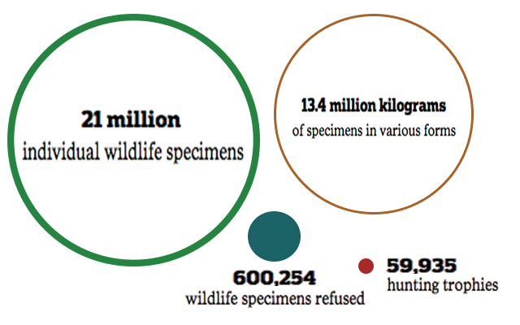
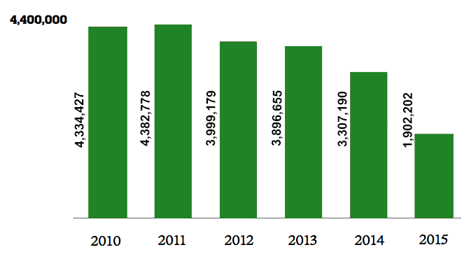
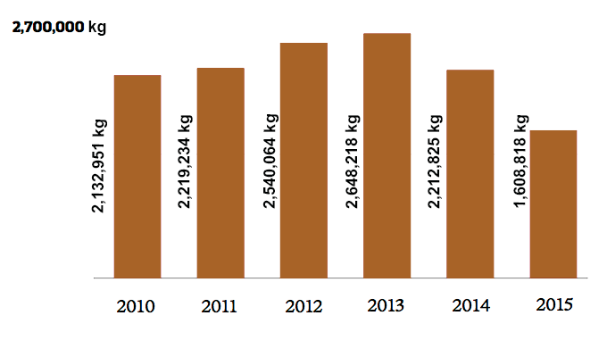
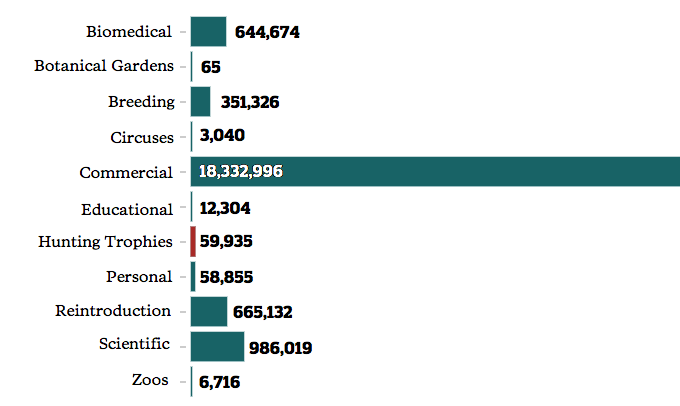
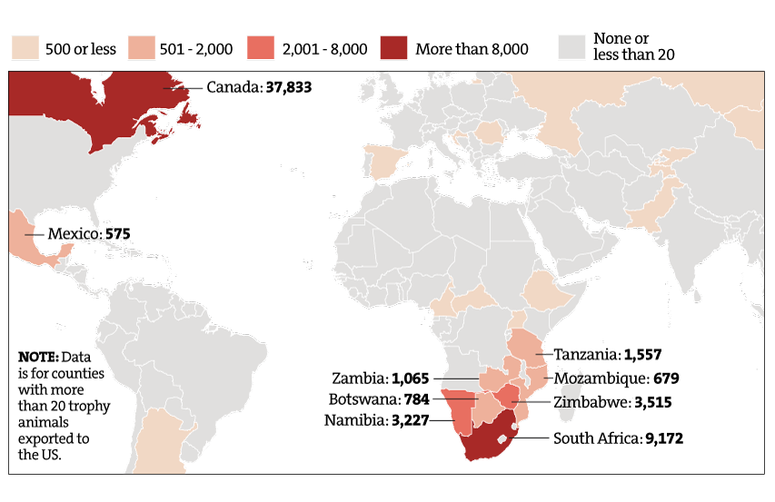
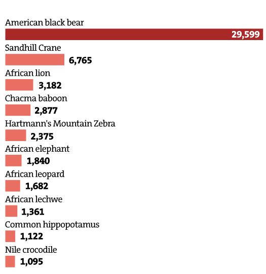
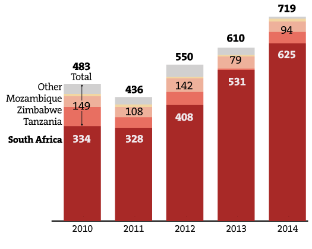

Imperiled wildlife specimens entering the U.S.
More than 21 million pieces of threatened wildlife have been allowed through U.S. customs between 2010-2015 -- only a small number being refused admittance -- along with about 13.4 million kilograms of plants and animals in various forms. Only a small portion are hunting trophies.

Millions of specimens brought into the U.S. each year
Individually-counted wildlife specimens -- including plants and animals -- pass through U.S. customs at a near average of 3.6 million per year.

Imported in many forms
Wildlife in the form of powders, skins, extracts and more are imported each year, averaging 2.6 million kilograms annually from 2010-2015.

Hunting trophies are a small portion
A total of 59,935 hunting trophies were cleared for entry, not including those brought in by taxidermists. But an overwhelming majority of specimens were admitted for commercial, scientific or biomedical purposes.

Where at-risk trophy animals come from
The nearly 60,000 hunting trophies of vulnerable animals that have been imported into the U.S. since 2010 represent several dozen species and come from all over the world, but Canada and South Africa top the list.

Top ten trophy animals
Of all the trophy animals imported into the U.S. from 2010-2015, black bears have topped the list. African lions are third.

African lion hunting trophies
The number of African lion hunting trophies legally imported to the United States increased each year across 2011-2014, with most coming from South Africa.
